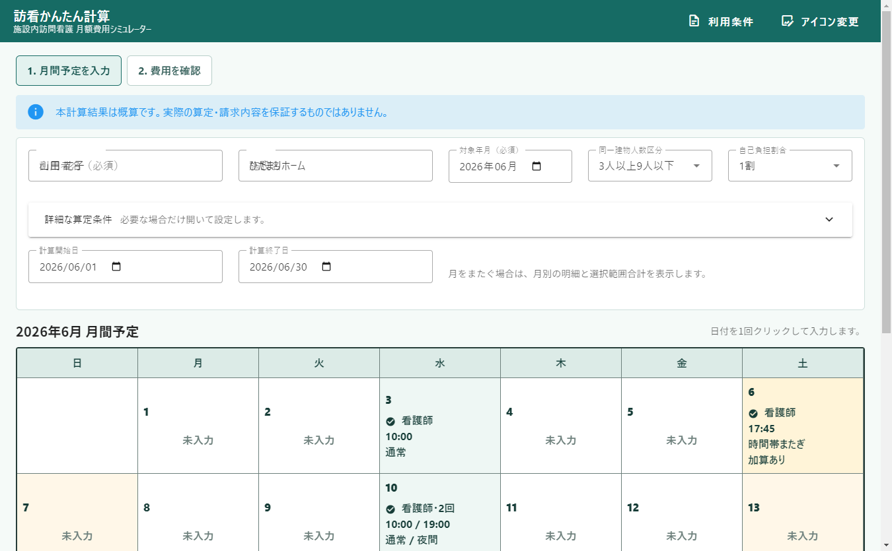
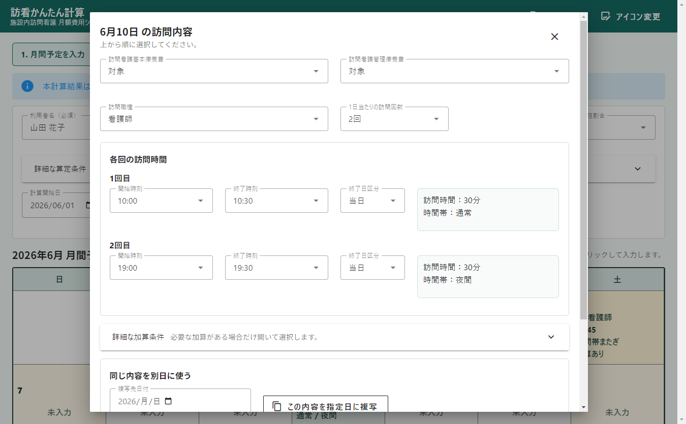
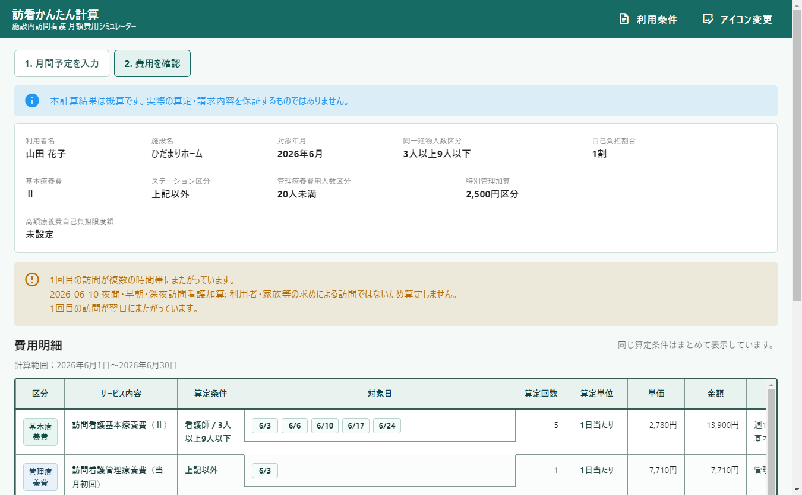

時間帯の自動判定
深夜、早朝、通常、夜間を時刻から判定し、時間帯またぎの場合は内訳を表示します。
施設内訪問看護 月額費用シミュレーター
施設内で医療保険の訪問看護を利用する1人の利用者について、1か月分の訪問予定と算定条件を入力し、 月額費用と利用者負担額の概算を確認するためのWindows向けデスクトップアプリです。
本計算結果は概算です。実際の算定・請求内容を保証するものではありません。
Purpose
請求処理、レセプト作成、正式な請求額の確定、複数利用者の一括計算は行いません。 あくまで現場確認用の概算ツールとして使用します。
Screen 1
利用者名、施設名、対象年月、同一建物人数区分、自己負担割合を入力し、対象月の日付を一覧で確認します。 訪問内容が登録済みの日付には要約が表示されます。

Screen 2
その日の訪問内容を、上から順に選択して登録します。開始時刻・終了時刻から訪問時間と時間帯を自動表示します。

Screen 3
入力済みの月間予定から、基本療養費、管理療養費、各種加算、月額費用総額、利用者負担額の概算を表示します。

Features
深夜、早朝、通常、夜間を時刻から判定し、時間帯またぎの場合は内訳を表示します。
1日2回以上の訪問を登録でき、同じ日の訪問時間が重複する場合は保存できません。
複数名訪問、長時間訪問、緊急訪問、特別管理加算、退院関連の項目を選択できます。
1割、2割、3割の自己負担割合を設定し、月額費用総額に対する概算額を表示します。
金額や算定条件は料金マスターを参照します。料金マスターの内容により計算結果が変わります。 正式な費用計算には、制度・通知・専門職の確認に基づく料金マスター更新が必要です。
Install